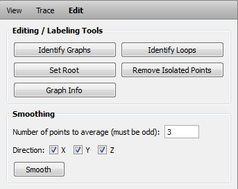

The View tab
3D Settings:
The set of display options provided here constitute a subset of the most important ports of module SpatialGraphView. To get the full potential of this module you have to switch to the Pool and visualize your SpatialGraph objects directly there.
- Show: Check Nodes to display all nodes of the graph data, check Segments to display segments.
- Segment style: Check Lines to display segments as lines, check Points to display the points, check both to display them as points and lines.
- Node scaling factor: Set the size of nodes.
- Node coloring: Constant displays all nodes with the default color. Select a label attribute for coloring, if available.
- Segment line width: Set the segment line width.
- Segment coloring: Constant displays all segments with the default color. Select a label attribute for coloring, if available.
- Point size: Set the size of the points.
- Transparency (non-selected): Set a constant transparency for nodes and segments that are not selected.
2D Settings:
- Node size: Set the size of the nodes in the 2D slice and 2D segment viewer.
- Line width: Set the line width of segments in the 2D slice and 2D segment viewer.
Selection:
- Hide selection: Hides all selected nodes and segments.
- Invert selection: Inverts the selection.
- View all: Shows all nodes, segments.
- Focus selection at picked point: This check box has three states: When filled, selecting a node or segment in the 3D viewer moves the slice of the 2D slice viewer in the current orientation to the picked position. When checked, the slice moves to the picked position and is oriented tangential to the corresponding segment. When empty, the slice orientation and position are not affected by selecting an item in the 3D viewer.
Stepping:
This tool steps through all Nodes or Segments and their corresponding Points while keeping the slice of the 2D slice viewer tangential to the current point or node. The following options are available:
- Label: Restrict the set of segments/nodes to step through by a label group. Within a label group select the Not assigned item to step through segments/nodes that are not assigned to a label of this label group. Select the All item to disable restriction to a label.
- Node: Step through all nodes of the current set of nodes. Next to the Node spin box the total number of nodes within the current set of nodes is displayed.
- Segment: Step through all segments of the current set of segments. Next to the Segment spin box the total number of negments within the current set of segments is displayed.
- Point: Step through all points of the currently selected segment. Next to the Points spin box the total number of points of the currently selected segment is displayed.
- Focus selection at picked point in 3D viewer: When checked, the element selected by the step tool (node or edge) is centered in the 3D viewer. The camera distance from the object can be adjusted with the Focal distance option. The distance is given in units.
- Hide surrounding elements: When checked, only elements close to the selected element are displayed. Elements to be displayed are selected by their vertices: For each vertex within a certain radius of a reference point the whole connected component attached to it is shown. Everything else is hidden in the 3D viewer. The reference point is the coordinate of the selected node if the node stepper is active. If the edge stepper is active, the middle between the edges end nodes is used as reference. The maximum distance for objects to be displayed can be adjusted with the Max vertex distance option. It is given in units.
The Trace tab
The Trace tab provides a set of tools to perform an automatic or interactive tracing on either the gray value image stack or a label field that was segmented previously using other methods. The tool always works on the data set currently selected in the Image Data drop-down menu, either image data or a label field.
AutoSkeleton:
The Run button triggers the computation of the graph. The result of the computation is a new SpatialGraph data object that will be automatically selected in the Graph Data drop-down menu.
The following options are available:
- Smooth: If checked, the result will have reduced staircase artifacts.
- Distance Map: If checked, an intermediate distance map object will be exposed in the Pool.
- Thinned Data: If checked, the thinned data object (see thinning algorithm) will be exposed in the Pool.
Interactive tracing:
To activate interactive tracing, click the Trace filament icon in the toolbar. Note that the interactive tracing tool is always active while the Trace filament icon is highlighted and can be triggered only if the 2D slice viewer is active.
The tool offers two tracing methods that differ with respect to the thickness of the traced fibers. The Thick Structures tool is optimized for fibers that are several voxels in diameter. It also calculates on the fly a thickness estimate of the traced fiber and stores it in the thickness point attribute of the graph data.
The Thin Structures tool can also handle very thin fibers. Note that the algorithm of the thin tracer is designed for fine and unbranched fibers; in case of thick branching sections the fiber diameter can be incorrectly estimated. The tool also offers a third option, Linear, which connects points by straight lines and does not estimate thickness. Attribute thickness is set to 1 for those segments. The Linear mode can be useful for low quality data for which the other modes fail.
Once the tracing tool is activated, the cursor of the 2D slice viewer will indicate if the current voxel's gray value is inside the data range specified by the Window Level control. You may limit this specified window even further by manually setting a range in the Intensity range control. Whenever a simple cross (outside cursor) appears, the voxel is outside the range. A circle with cross hair (inside cursor) indicates voxels inside the range.
Interactive tracing starts by clicking in the 2D slice viewer onto a foreground pixel which adds a node at the selected position. Once a node has been added, the tracer is in append mode, which is indicated by the cursor turning red. The next click onto a foreground pixel adds a second node and starts the automatic tracing algorithm by calculating the shortest line connecting these two nodes within the current data range.
Note that after the automatic tracing has finished, the tracer is still in append mode, so that the next click onto an inside voxel will append another point connected to the previous point, and so on. To terminate a tracing sequence, click onto the last added node or onto a pixel which is outside the specified range. The cursor color turns white again.

Figure 4:
The Edit tab.
The Edit tab
Editing and Labeling Tools:
- Identify Graphs: This button identifies graphs, that is all sets of connected segments. The results are stored as a label group Identified_graphs in the SpatialGraph object. Use the Label Editor and the graph display options (View tab, 3D Settings) to visualize identified graphs.
- Identify Loops: When clicking this button the graph is traversed to detect so called loops, i.e., all nodes that are connected to a particular root node by more than one set of segments. This tool is useful when tracing neurons, where the dendritic arborizations must follow a strict tree-like topology.
The result of the computation is stored as a label group Identified_Loops in the SpatialGraph object. Use the Label Editor and the graph display options (View tab, 3D Settings) to visualize identified loops.
Note that a segment is defined by two nodes. Therefore, when you remove a node, the connected segment will be also removed. If you delete a loop including its nodes, it might be possible that some connected segments will be also deleted. Hence the Identified_Loops contain the looping segments, but not the nodes connecting them. However this may produce isolated points which can be removed by the Remove Isolated Points button.
- Set Root: Use this button to automatically determine the tree topology of a graph. To do so, the tool needs a root segment which can be set by selecting a segment and clicking this button. At the same time all other segments will be automatically labeled with a rank. With rank we denote the branching level with respect to the root. For example, beginning with the root segment (rank 0), every branching point increments the rank of the subsequent segments by 1 level.
The results are stored as a label group Rank in the SpatialGraph object. Use the Label Editor and the graph display options to visualize the rank.
Note that calculating the topology and thus determining the ranks will be aborted when loops are detected within the graph. If this happens, use the Identify Loops button to tag all loops and then use the graph editing tools to resolve them.
- Remove Isolated Nodes: Press this button to remove nodes that are not connected to other nodes.
- Graph Info: Pressing this button triggers the computation of basic statistical information of the current graph. If parts of a graph are selected, the information is calculated for the current selection. If there is no selection, this is done for the whole graph. The information is displayed in a separate spreadsheet window (see SpatialGraphStatistics).
Smooth segments:
To smooth the currently selected SpatialGraph press the Smooth selection button. The following options are available:
- Number of points to average: Number of neighboring points that should be averaged for each point.
- Direction: Restrict smoothing onto certain directions, e.g., if only z direction checkbox is checked, smoothing will only be applied in z direction of the SpatialGraph.
{kind=link}
{kind=link}
{kind=link}